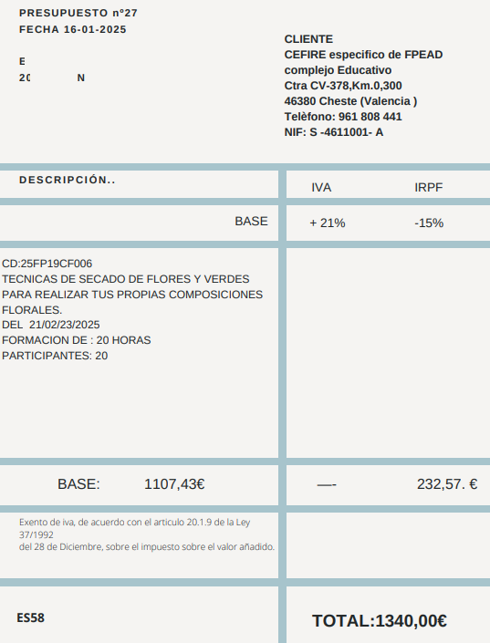
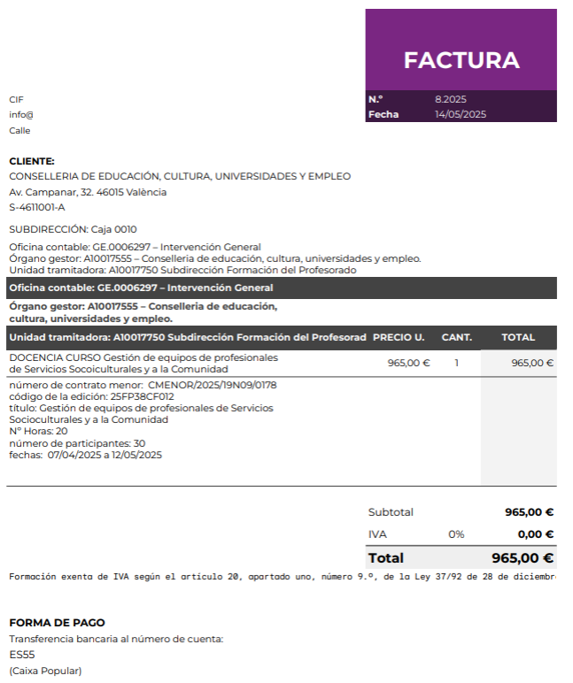

Els conceptes dels gastos són línia a línia inclòs material.
Les Minutes porten un 15% de IRPF.
Les Factures pot o no portar el 15% de IRPF però es questió de l'empresa.
Necessitem per a Minutes de funcionaris i/o dietes, Minutes NO funcionaris i Factures.
25COXXNIXXX_FITXAECONOMICA.xlsx [Descàrrega d'arxiu] (en observacions posem si és funcionari docent GVA o NO és funcionari GVA per a facilitar la documentació a Intervenció Econòmica).
25COXXNIXXX_FITXAECONOMICA.pdf (amb firma digital de l'assessor/a)
Per a la Fitxa Económica hem de revisar les tarifes i exemples a:
- TARIFAS_JUNIO_2025.pdf [Descàrrega d'arxiu]
- ANEXO_TARIFAS_2025.pdf [Descàrrega d'arxiu]
i recordéu alta en PROPER (molt important perquè caduca a los 6 mesos)
Enllaç PROPER: https://www.gva.es/es/inicio/procedimientos?id_proc=22648
A més, necessitem per a Minutes de NO funcionaris (sense factura):
25COXXNIXXX_INFORME_NECESSITATS_NOFUNCIONARI.docx [Descàrrega d'arxiu]
25COXXNIXXX_INFORME_NECESSITATS_NOFUNCIONARI.pdf
En cas, de Factures Empresa/Autònom o Entitat Col·laboradora GVA o Universitat:
25COXXNIXXX_INFORME_NECESSITATS.docx [Descàrrega d'arxiu]
25COXXNIXXX_INFORME_NECESSITATS.pdf
25COXXNIXXX_FACTURA_PROFORMA_NOMBRE.pdf (més a baix)
Per accions formatives PAA a cost 0
Possarem en Pressupost 0.01 (per indicar que no s'ha oblidat possar el pressupost)
Per a funcionaris docents
- 23302 Gastos de formación del personal docente
En cas necessari per al personal funcionari docent (DIETES):
- 230.02 Dietas, hospedaje o restauración personal funcionario
- 231.02 Locomoción, gastos de transporte personal funcionario
Agència TRANSVIA, en la factura ha d'apareixer: codi formació, CEFIRE, i totes les dades.
Per empreses/autònoms, persones NO funcionaris (no hi han DIETES de Restauració)
- 226.06 Gastos diversos, Reuniones, conferencias, celebración de actos y cursos
Necessitem afegir la:
25COXXNIXXX_FACTURA_PROFORMA_NOMBRE.pdf
segons les Instrucciones_Facturacion_FACE_2025.pdf [Descàrrega d'arxiu]
Factura Proforma amb les dades del CEFIRE i amb la informació de l’acció formativa:
dades de l'empresa
dades del CEFIRE
dades de l'acció formativa: codi, títol, dates, modalitat, hores total, nº participants, preu unitat, import brut, import total, etc…)
IVA corresponent: cal afegir la coletilla "Factura exenta de IVA según art. 20.1.9 de la ley 37-1992 de 28 de diciembre" si l'empresa està exempta d'IVA.
Número de compte bancari on s'ha de fer el pagament
Factura proforma → Contracte menor (amb nº expedient, aquest nº d'expedient es molt important per fer la factura a FACE)
(Enviar Factura Proforma a: nombre@edu.gva.es)
Example de Factura Proforma o Pressupost

Example de Factura a FACE (sincronitzat amb NETFIS)
Cal detallar les instruccions per a pujar la factura a la plataforma FACE, que és la plataforma de gestió de factures electròniques del Ministeri d'Hisenda. És important que l'empresa tinga un usuari registrat en aquesta plataforma i que puga pujar la factura correctament.
Cal insistir que la factura no es pot pujar a la plataforma FACE fins que no s'haja finalitzat la formació.
Podem enviar a l'empresa el Manual_detallado_FACE.pdf [Descàrrega d'arxiu] i el Video_explicatiu_FACE.docx [Descàrrega d'arxiu] per a facilitar el seu ús.
Important que aparega el nº expedient del contracte menor dau des del CEFIRE

Observacions
- Si Factura empresa/autònom > 3000 euros → obligada a factura FACE (demanar resguard FACE a la empresa/autònom). Si no factura proforma.
FACE se sincroniza con NETFIS.
- Si Factura empresa/autònom > 1800 euros →
* Per la campanya FSE es necessari 3 pressupostos y material fungible CEFIRE. Si no trie el més barat s'ha de fer un altre informe justificant l'elecció d'eixe pressupost.
*AAPP y PAA no fa falta 3 pressupostos.
I apliquem i aceptem.